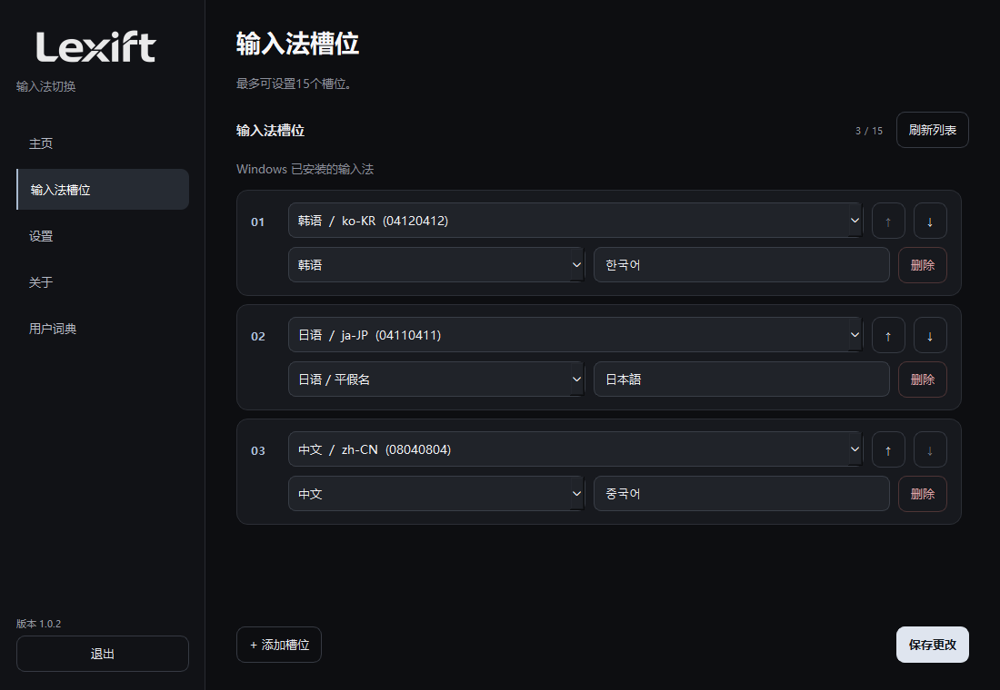
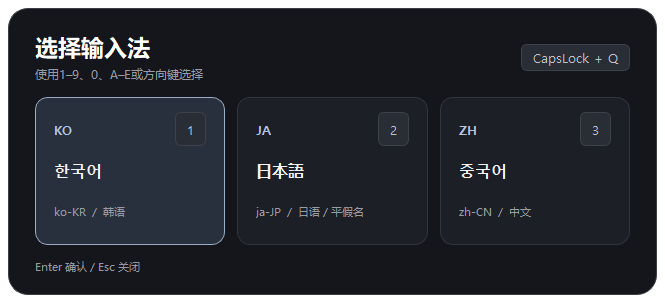
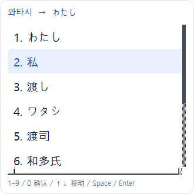
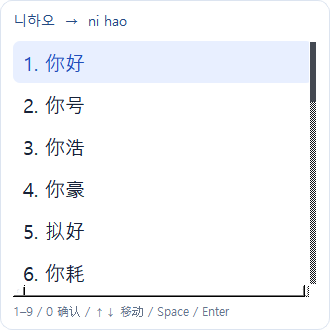
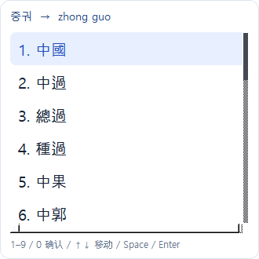
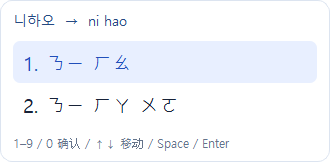
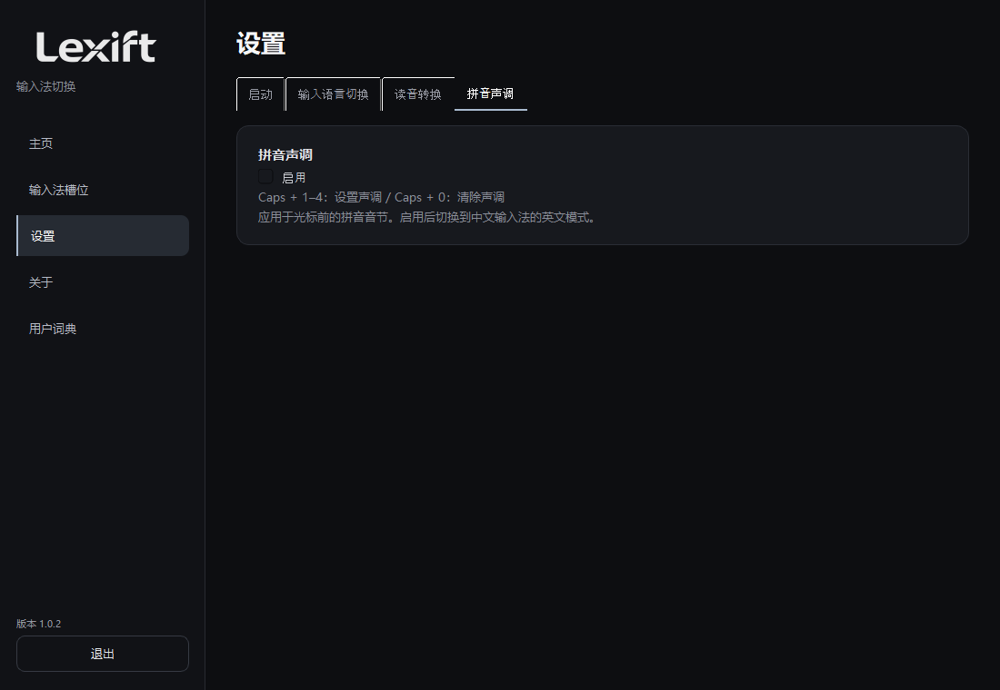
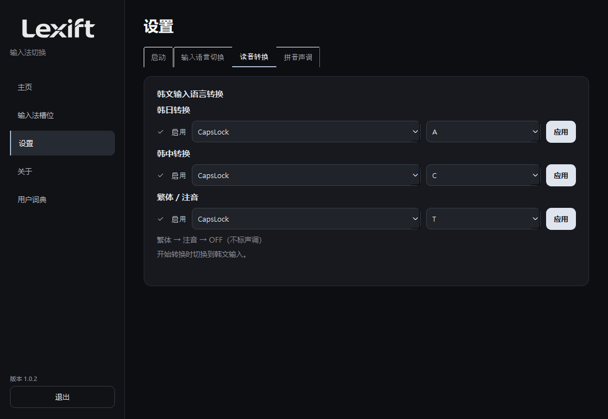
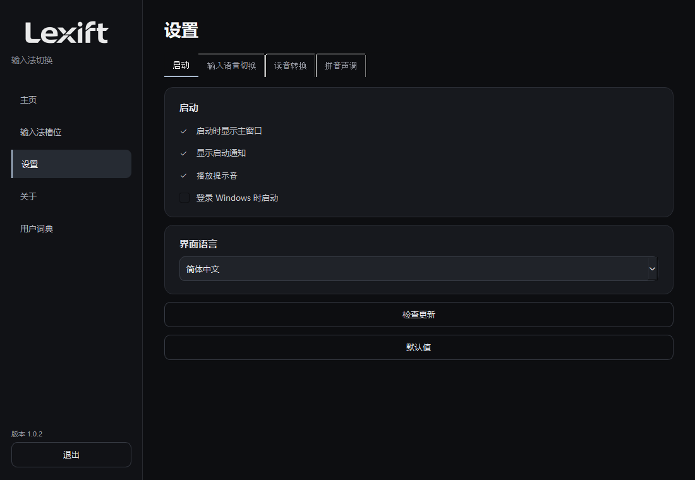
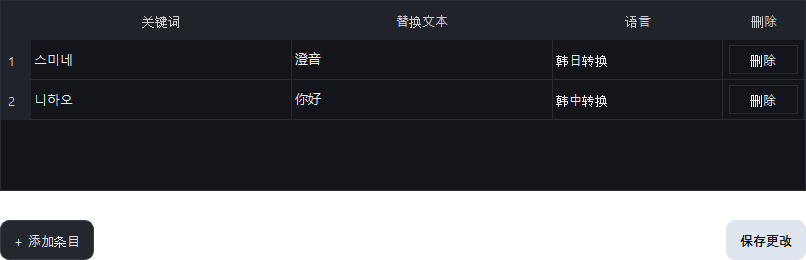

使用说明
概述
切换输入法，按读音输入，全程使用键盘。
Windows 10 / 11 x64。便携版无需安装 Python。
下载 1.0.2 ↗安装与启动
解压 ZIP 后运行 Lexift.exe。在 Windows 安装所需输入法，再添加到输入槽位。

切换输入法
按 Caps + Q 打开输入法列表。使用方向键和 Enter，或按显示的编号选择。

日语输入
在输入框按 Caps + A，再用韩文输入日语读音。例如：와타시 → 私。再次按快捷键关闭。

候选操作：↑↓ 移动；Space / Enter 确认；1–9 / 0 按编号选择；Esc 关闭。
开始读音转换时自动切换到韩文输入。此功能面向韩语读音输入，部分环境可能不受支持。
简体中文
按 Caps + C，用韩文输入普通话读音。例如：니하오 → 你好。候选以简体显示。

繁体与注音
Caps + T 依次切换繁体 → 注音 → OFF。例如：중궈 → 中國；니하오 → ㄋㄧ ㄏㄠ。注音不自动推断声调。


拼音声调
在设置中启用“拼音声调”。返回输入框后，中文输入法切换为英文模式。输入拼音后按 Caps + 1–4 指定声调，Caps + 0 清除声调。
hao → hǎo（Caps + 3），liu → liú（Caps + 2），gui → guǐ（Caps + 3）。用空格或单引号分隔音节。关闭此功能后，专用快捷键也会停用。

设置
分为启动、输入语言切换、读音转换和拼音声调。勾选“启用”控制功能，按“应用”保存快捷键。冲突的快捷键无法保存。


“默认值”会重置快捷键、功能设置和自定义词典。请确认后执行。
自定义词典
输入关键词、替换文本和语言后保存。例如：스미네 / 澄音 / 韩日转换。使用每行右侧按钮单独删除。

故障排查
没有候选时，请检查功能开关和输入法安装状态。日语转换需要 Microsoft 日语输入法。密码框等受保护区域及部分限制辅助功能的控件不受支持。
候选引擎在使用时加载，转换结束三秒后释放。总内存占用取决于输入法和使用状态。
GitHub Issues ↗